창호종합기계CHANGHO INC
109. R 노칭기 · 축관기 · 파이프 가공기
055-327-4112
055-327-4112
Pipe R-Notching Machine
파이프 끝단 R 노칭,
현장 전원과 물량에 맞춰 골라 드립니다
Hydraulic · Electric · Manual R-Notching Machines
같은 R 노칭이라도 기계는 유압 10ton · 모터식 2.2kW · 수동 3종으로 나뉩니다. 가공하실 강관 지름과 설치 현장의 전원을 알려 주시면 맞는 사양을 골라 드립니다.
1/4" ~ 2" 강관유압 · 모터 · 수동 6종
기종 선정 · 견적 문의스마트스토어 바로가기Line-up
이 페이지의 6종
구경보다 「전원」과 「하루 물량」에 따라 기종이 달라집니다.
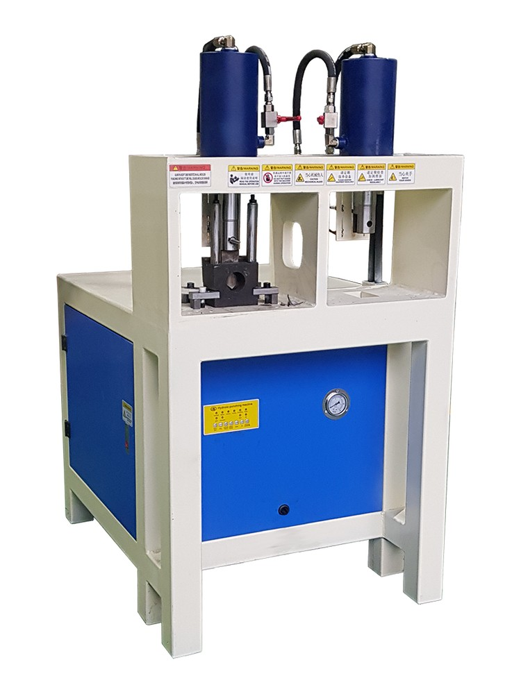
TP-M100P2 — 유압 · 2헤드
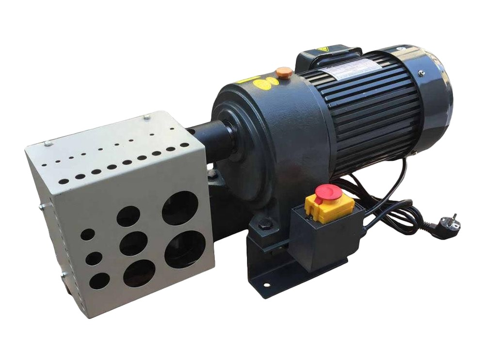
WTM-MNR1-220V — 모터식 · 220V
WTM-MNR1-380V — 모터식 · 380V 3상
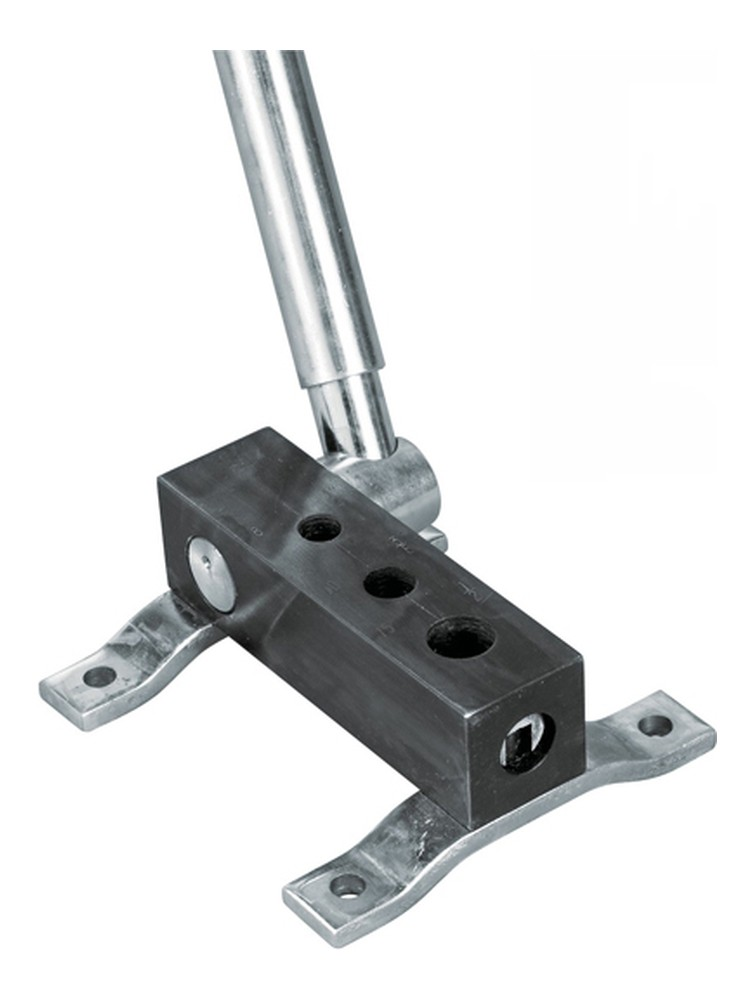
WTM-NR1 — 수동 · 1/4" ~ 1/2"
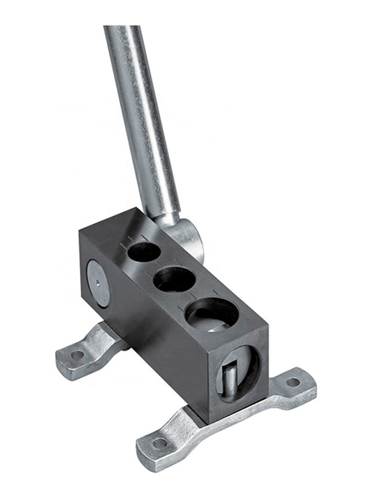
WTM-NR2 — 수동 · 3/4" ~ 1-1/4"
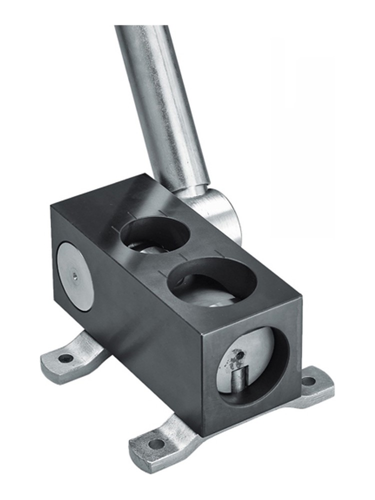
WTM-NR3 — 수동 · 1-1/2" ~ 2"
Index
이 페이지에서 찾으실 곳
기종과 부속, 주문 안내로 바로 이동하실 수 있습니다.
TP-M100P2
WTM-MNR1-220V
WTM-MNR1-380V
WTM-NR1
WTM-NR2
WTM-NR3
기종 비교표
드릴 노칭기
주문 · 납기
6종
구동 방식 3계열
1/4"~2"
받는 강관 구경
10ton
유압형 펀칭 압력
3mm
강관 두께 상한
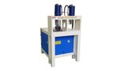
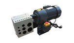
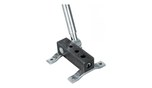
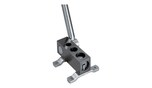
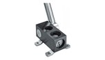
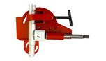
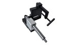
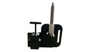
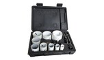
이 계열 10품목 — 아래에서 기종별 사양을 보실 수 있습니다
How to choose
어느 사양을 고를 것인가
구경보다 「전원」과 「하루 물량」에 따라 기종이 달라집니다.
전원이 없는 현장
수동식 NR 시리즈입니다. 7.5~16kg이라 들고 이동 후 그 자리에서 가공하실 수 있습니다.
220V 단상만 있는 작업장
모터식 220V형입니다. 일반 콘센트 전원으로 반복 물량을 가공합니다.
380V 3상 수전이 있는 공장
모터식 380V형입니다. 기존 3상 분전반에 그대로 연결하시면 됩니다.
두꺼운 소재 · 대량 반복
유압 2헤드 TP-M100P2입니다. 10ton으로 눌러 두 헤드가 동시에 노칭합니다.
구경이 여러 가지
모터식 한 대가 1/4"~2" 8규격을 모두 가공합니다. 수동은 구경대별로 모델이 나뉩니다.
현장이 자주 바뀌는 경우
수동식이 가볍습니다. 전원 조건을 확인할 필요 자체가 없습니다.
Why it matters
노칭이 안 맞으면 용접으로 메우게 됩니다
파이프 교차부는 끝단이 상대 관의 곡면에 붙어야 용접 길이가 짧아집니다. 노칭 형상이 안 맞으면 그 틈을 용접으로 메우게 되고, 그만큼 열이 들어가 변형과 후처리가 늘어납니다. 저희는 가공하실 강관의 외경과 두께를 먼저 확인해 금형을 맞추고, 같은 소재로 시험 노칭을 해 형상을 확인한 뒤 사양을 확정해 드립니다.
TP-M100P2
2헤드 유압 R 노칭기
Hydraulic R-Notching Machine (2 Head) TP-M100P2
01
펀칭 압력 10 ton — 두꺼운 소재도 한 번에모터식·수동식으로는 가공이 힘든 두께도 10톤 유압으로 눌러 가공합니다.
02
유압실린더 2기 — 2헤드 동시 노칭1헤드기로 두 번 물려야 하는 작업을 한 사이클에 끝냅니다.
03
공압 불필요 · 5.5kW — 컴프레셔 없이 단독 운용에어 배관이 없는 구역에도 380V 전원만으로 설치하실 수 있습니다.
| 모델 | TP-M100P2 |
|---|---|
| 사용전원 | 380V |
| 소비전력 | 5.5kW |
| 공기압력 | 무 (유압 단독) |
| 가공 능력 | 펀칭 압력 10 ton |
| 기계크기 | 1,100 × 1,800 × 1,500 mm |
| 중량 | 400 kg |
| 가공정밀도 | ±0.1mm 이내 |
| 원산지 | 중국산 |
| 제품 상태 | 주문제작 |
어느 사양이 맞는지 물어보십시오
가공하실 강관 지름·두께와 설치 현장의 전원만 알려 주시면 사양을 골라 드립니다.
055-327-4112 대표
010-4465-4112 휴대전화
geonics@hanmail.net 이메일
TP-M100P2
유압식 실물 · 작업 사진
출고 전 시운전과 고객 현장에서 찍은 사진입니다.
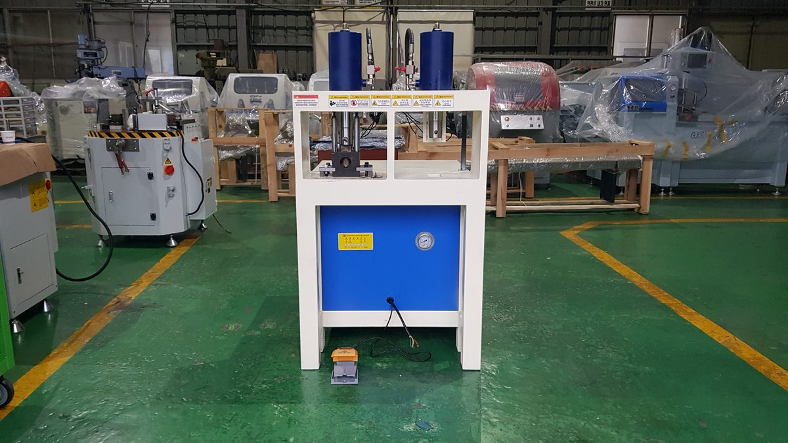
2헤드 유압 R 노칭기 본체 — 출고 전 시운전 준비
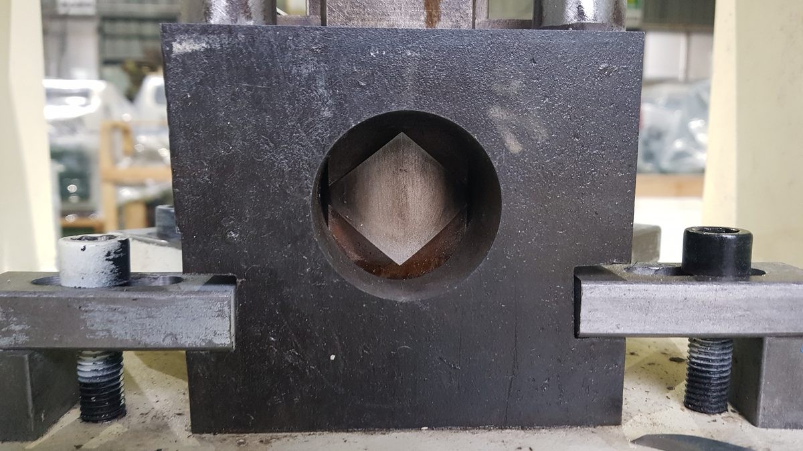
금형 — 파이프를 물리는 V자 홈과 고정 블록
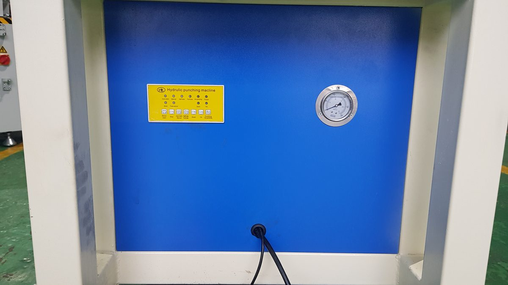
조작부 — 유압 압력계와 작동 버튼
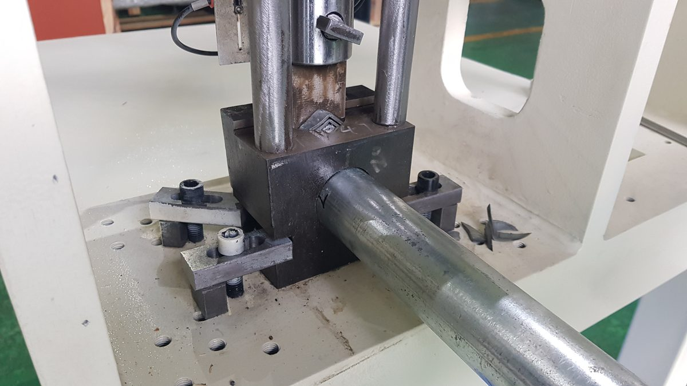
가공 — 파이프를 물리고 윗금형을 내립니다
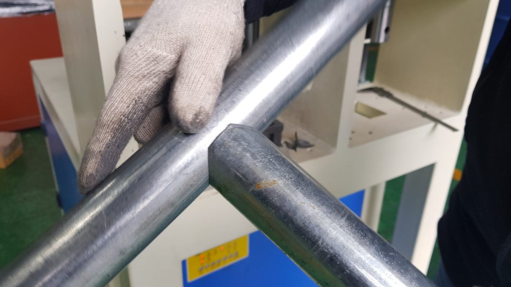
맞춤 확인 — 가공한 끝단을 다른 파이프에 대어 봅니다
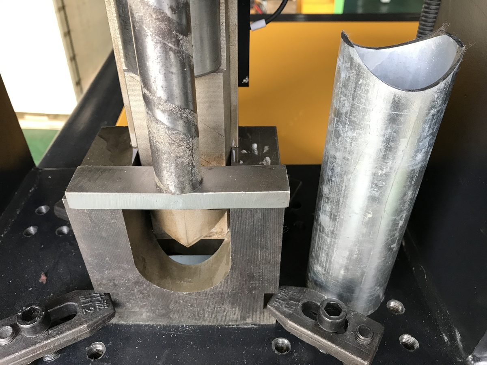
현장 — 고객 공장에서 강관 끝단을 가공합니다
Video
제품 소개 영상
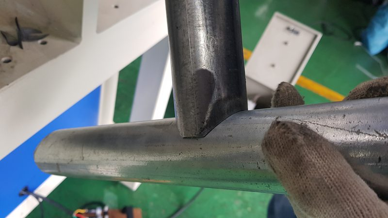
사용 방법과 2도 상하 가공 설정 — TP-M100P2 · 창호종합기계 유튜브
WTM-MNR1-220V
모터식 R 노칭기 (220V)
Electric Pipe Notching Machine WTM-MNR1-220V
01
가공범위 1/4" ~ 2" — 강관 8규격 한 대로수동식 3대로 나눠 쓰시던 8개 구경을 한 대로 가공합니다.
02
220V 2.2kW — 단상 전원으로 반복 물량레버를 반복해 당기시던 작업을 모터가 대신합니다.
03
92kg · 680 × 350 × 350mm — 작업대 옆 설치유압기(400kg)와 달리 별도 공간 없이 기존 작업대 옆에 설치합니다.
| 모델 | WTM-MNR1 |
|---|---|
| 사용전원 | 220V |
| 소비전력 | 2.2kW |
| 공기압력 | 무 |
| 가공 능력 | 1/4", 3/8", 1/2", 3/4", 1", 1-1/4", 1-1/2", 2" (강관 두께 최대 3mm · Φ51mm) |
| 기계크기 | 680 × 350 × 350 mm |
| 중량 | 92 kg |
| 원산지 | 중국산 |
| 제품 상태 | 주문제작 |
WTM-MNR1-380V
모터식 R 노칭기 (380V)
Electric Pipe Notching Machine WTM-MNR1-380V
01
380V 3상 — 공장 수전 그대로 연결220V 단상 배선을 따로 끌어오지 않고 기존 3상 분전반에 그대로 연결합니다.
02
220V 형과 같은 가공범위 1/4" ~ 2"전압만 다를 뿐 가공 구경·두께·본체는 220V형과 같습니다 — 현장 전원에 맞춰 고르시면 됩니다.
03
92kg · 680 × 350 × 350mm — 기존 배치 그대로220V형과 외형·중량이 같아 설치 공간을 다시 계획하지 않으셔도 됩니다.
| 모델 | WTM-MNR1 |
|---|---|
| 사용전원 | 380V 3선식 |
| 소비전력 | 2.2kW |
| 공기압력 | 무 |
| 가공 능력 | 1/4", 3/8", 1/2", 3/4", 1", 1-1/4", 1-1/2", 2" (강관 두께 최대 3mm · Φ51mm) |
| 기계크기 | 680 × 350 × 350 mm |
| 중량 | 92 kg |
| 원산지 | 중국산 |
| 제품 상태 | 주문제작 |
WTM-MNR1
모터식 실물 · 작업 사진
25A·40A 강관을 가공한 시운전 사진입니다. 220V와 380V는 전압만 다르고 구조가 같아 사진을 함께 씁니다.
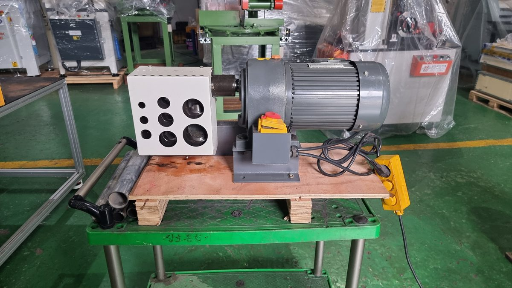
모터식 R 노칭기 본체 — 220V와 380V가 같은 구조입니다
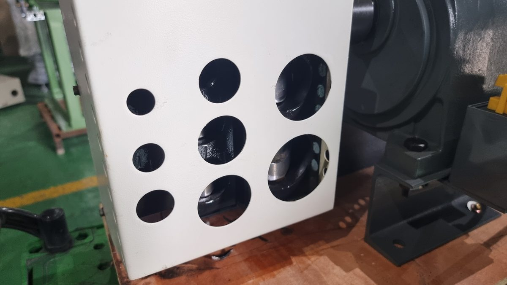
금형판 — 구경별 구멍이 한 판에 모여 있습니다
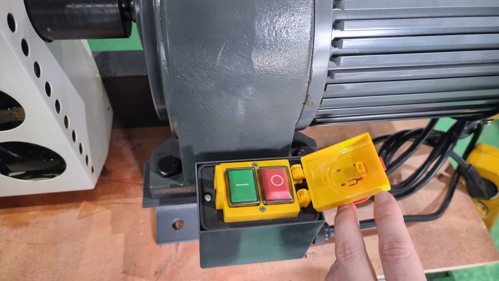
조작 — 버튼을 눌러 모터를 작동합니다
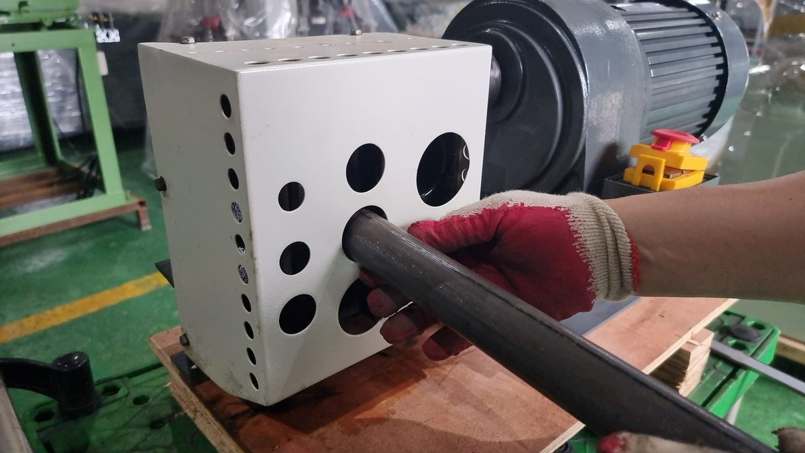
가공 — 금형 구멍에 파이프를 밀어 넣습니다
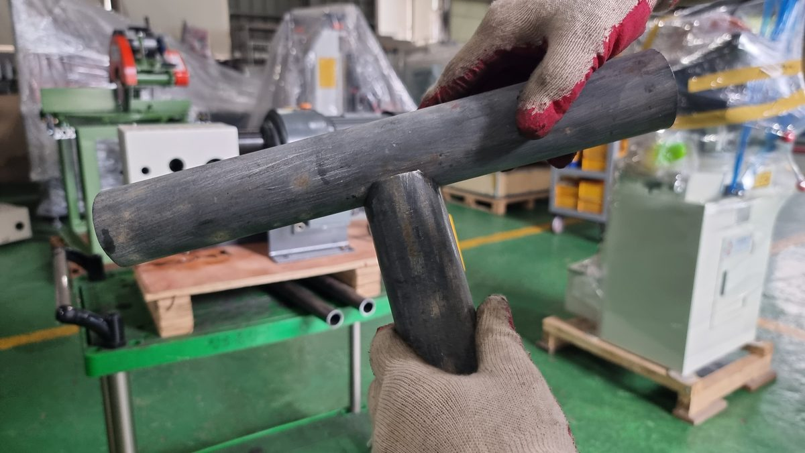
가공 결과 — R 형상으로 파인 강관 끝단
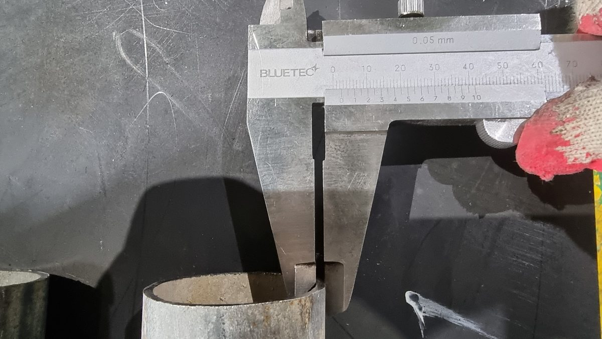
치수 확인 — 가공 깊이를 캘리퍼스로 잽니다
Video
제품 소개 영상
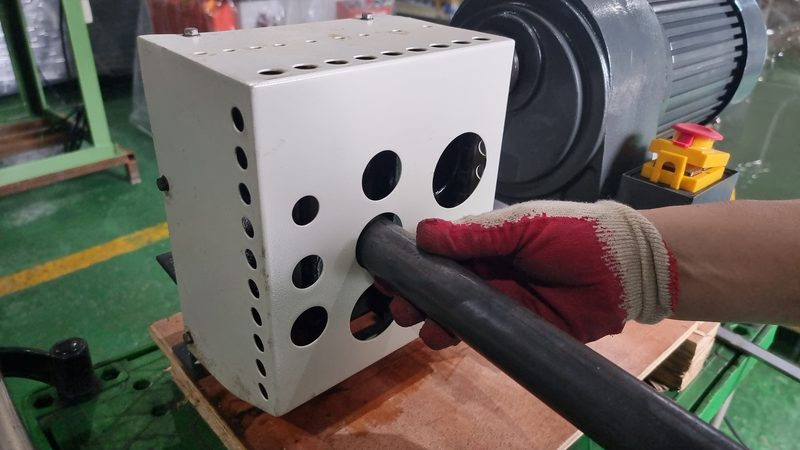
25A·40A 강관 끝단 가공 시운전 — WTM-MNR1 · 창호종합기계 유튜브
WTM-NR1
수동식 R 노칭기 (소구경)
Manual R-Notching Machine WTM-NR1
01
1/4" · 3/8" · 1/2" — 소구경 강관 전담소구경만 다루는 라인이라면 모터식 없이 이 사양으로 충분합니다.
02
7.5kg 수동 — 전원 없이 현장 노칭7.5kg이라 공구함에 넣어 이동 후 그 자리에서 노칭하실 수 있습니다.
03
NR2 · NR3와 규격 확장구경이 커지면 상위 모델을 더해 범위를 넓히실 수 있습니다.
| 모델 | WTM-NR1 |
|---|---|
| 사용전원 | 수동 (무전원) |
| 가공 능력 | 1/4", 3/8", 1/2" (강관 두께 최대 3mm · Φ51mm) |
| 기계크기 | 500 × 180 × 160 mm |
| 중량 | 7.5 kg |
| 가공정밀도 | ±0.2mm 이내 |
| 원산지 | 중국산 |
| 제품 상태 | 주문제작 |
WTM-NR2
수동식 R 노칭기 (중구경)
Manual R-Notching Machine WTM-NR2
01
3/4" · 1" · 1-1/4" — 중구경 강관 전담NR1(1/2" 이하) 위 구경대인 중구경을 담당합니다.
02
9kg 수동 — 전원 없이 현장 노칭전원이 없는 시공 현장이나 옥외 작업에서도 그대로 사용하실 수 있습니다.
03
NR1 · NR3와 규격 확장NR1·NR3를 함께 두시면 1/4"부터 2"까지 수동으로 이어집니다.
| 모델 | WTM-NR2 |
|---|---|
| 사용전원 | 수동 (무전원) |
| 가공 능력 | 3/4", 1", 1-1/4" (강관 두께 최대 3mm · Φ51mm) |
| 기계크기 | 500 × 180 × 160 mm |
| 중량 | 9 kg |
| 가공정밀도 | ±0.2mm 이내 |
| 원산지 | 중국산 |
| 제품 상태 | 주문제작 |
WTM-NR3
수동식 R 노칭기 (대구경)
Manual R-Notching Machine WTM-NR3
01
1-1/2" · 2" — 수동식 최대 구경수동식으로 가공하실 수 있는 최대 구경 구간을 담당합니다.
02
16kg 프레임 — 대구경 노칭 하중을 받습니다NR1(7.5kg)의 2배 중량이라 대구경 노칭에서도 본체가 안정적으로 버팁니다.
03
NR1 · NR2와 규격 확장NR3가 큰 구경을 담당해 세 대로 1/4"부터 2"까지 수동으로 채워집니다.
| 모델 | WTM-NR3 |
|---|---|
| 사용전원 | 수동 (무전원) |
| 가공 능력 | 1-1/2", 2" (강관 두께 최대 3mm · Φ51mm) |
| 기계크기 | 500 × 180 × 160 mm |
| 중량 | 16 kg |
| 원산지 | 중국산 |
| 제품 상태 | 주문제작 |
WTM-NR1 · NR2 · NR3
수동식 실물 · 작업 사진
알루미늄 파이프 끝단을 가공하고 맞춰 본 사진입니다.
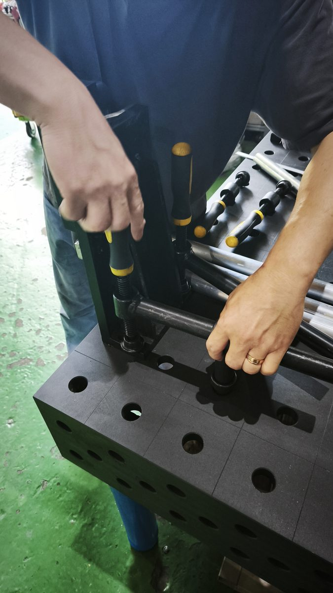
조작 — 레버를 눌러 가공합니다. 전원이 필요 없습니다
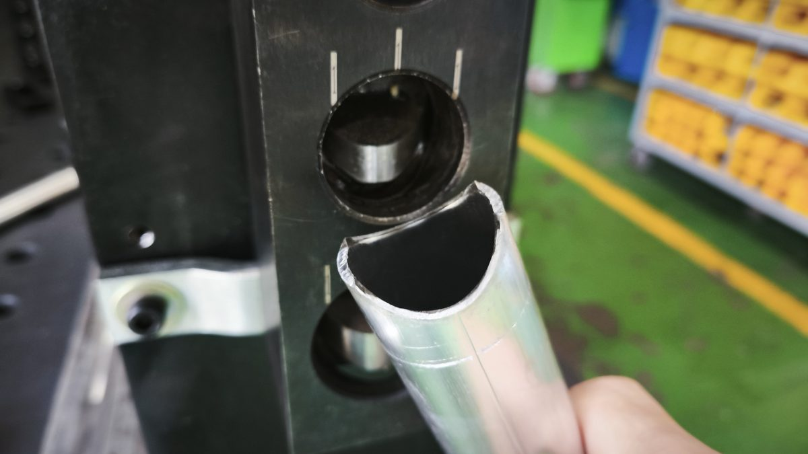
가공 결과 — 알루미늄 파이프 끝단이 R 형상으로 파였습니다
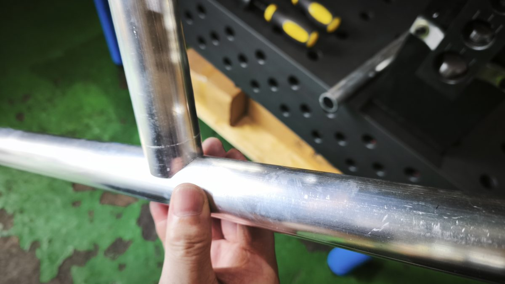
맞춤 확인 — 가공한 끝단을 다른 파이프에 대어 봅니다
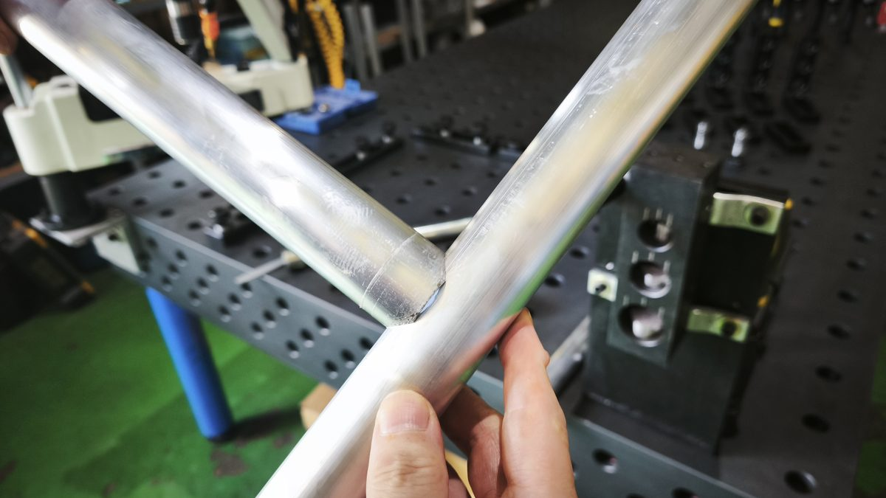
조립 — 파이프 두 개가 T자로 맞물립니다
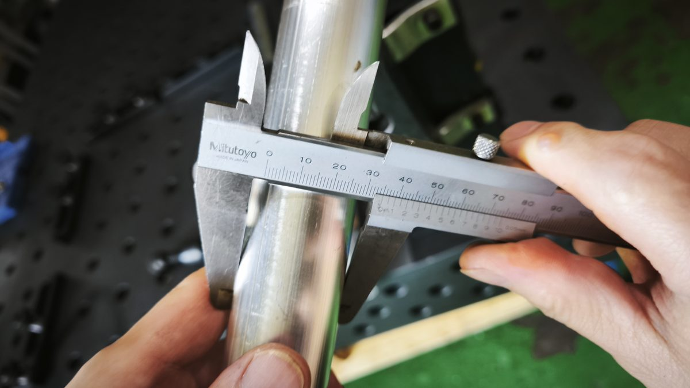
치수 확인 — 파이프 외경을 캘리퍼스로 잽니다
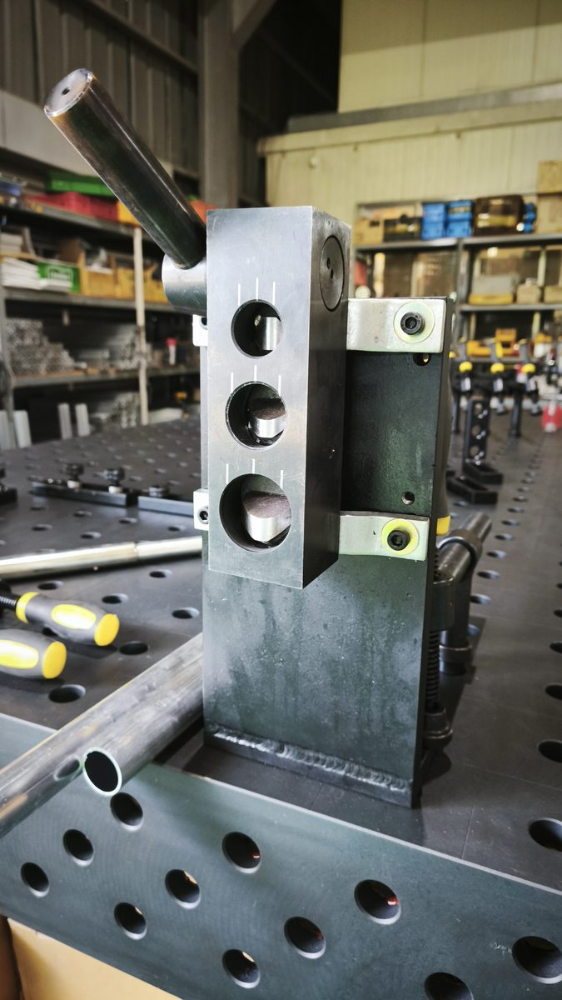
본체 — 구경별 금형 구멍이 세로로 배열돼 있습니다
Video
제품 소개 영상
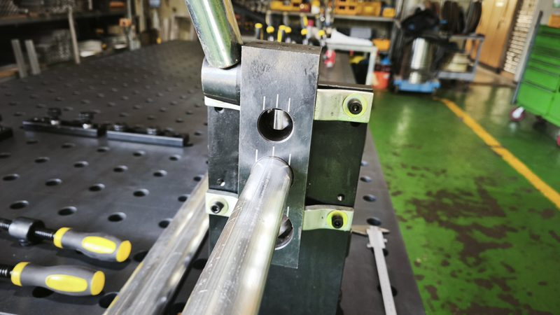
알루미늄 파이프 끝단 R 가공 — WTM-NR1 · NR2 · NR3 · 창호종합기계 유튜브
Real Product
실물 · 가공 결과
전시장에서 촬영한 실사입니다. 금형판, 파이프 투입, 가공된 끝단을 그대로 담았습니다.
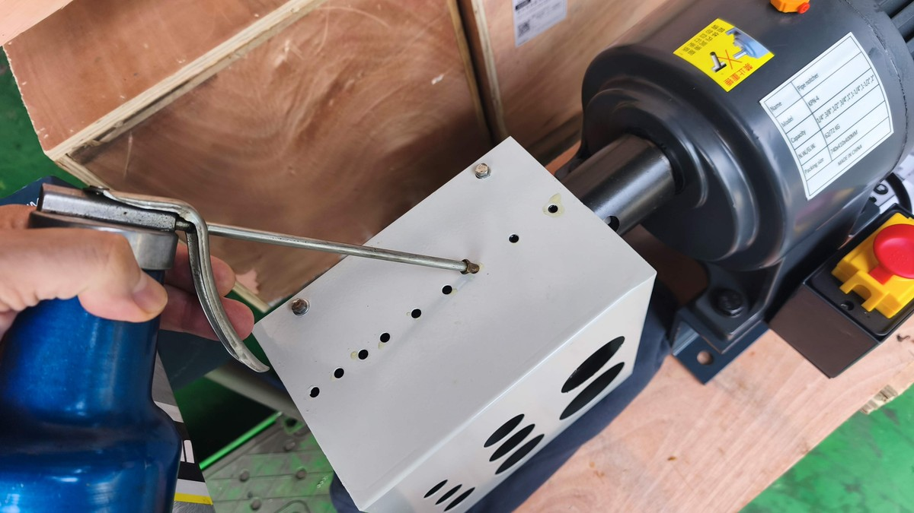
모터식 R 노칭기 — 금형판과 모터부, 파이프 투입 자세
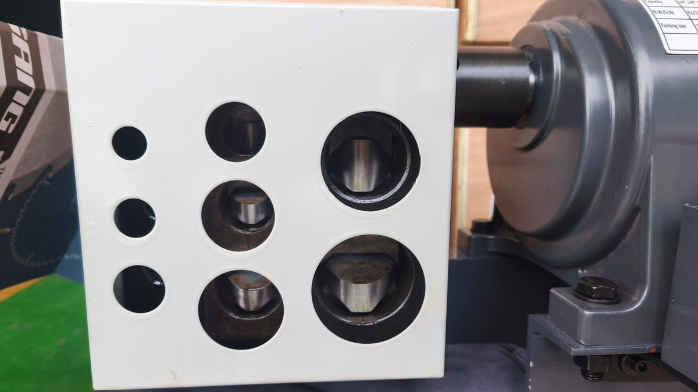
다구경 금형판 — 강관 8규격을 한 판에서 가공합니다
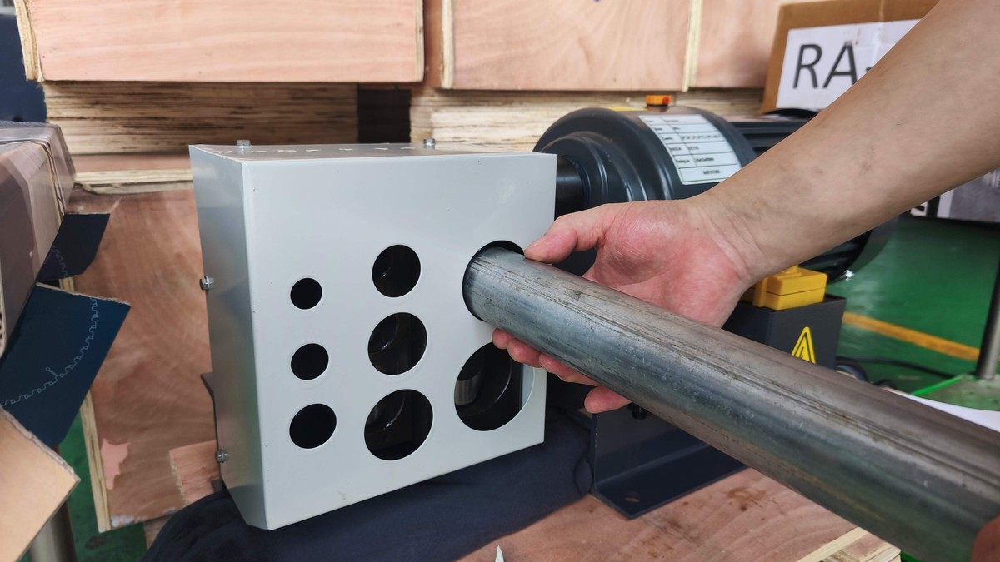
가공 — 금형에 파이프를 물리고 밀어 넣습니다
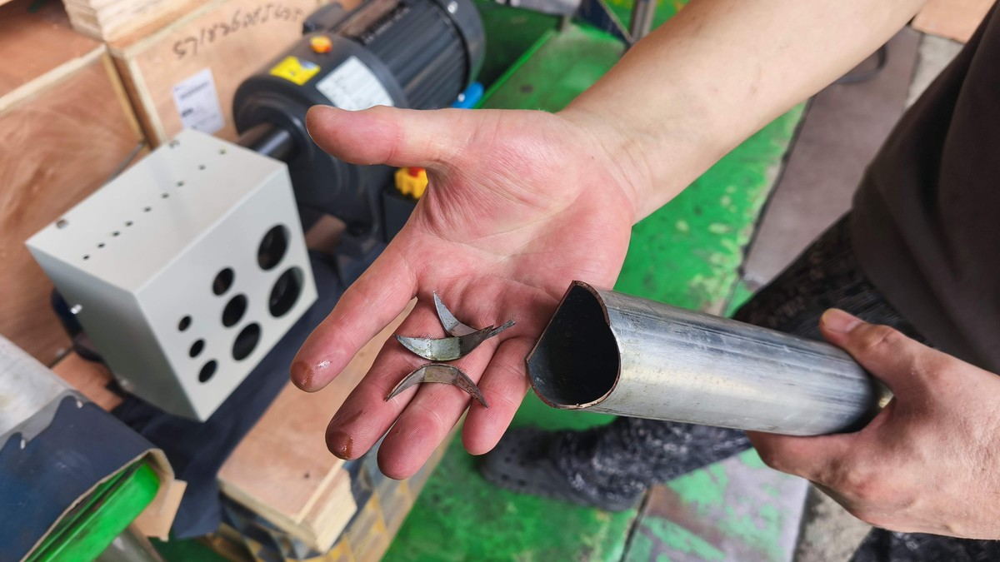
가공 결과 — R 형상으로 파인 강관 끝단
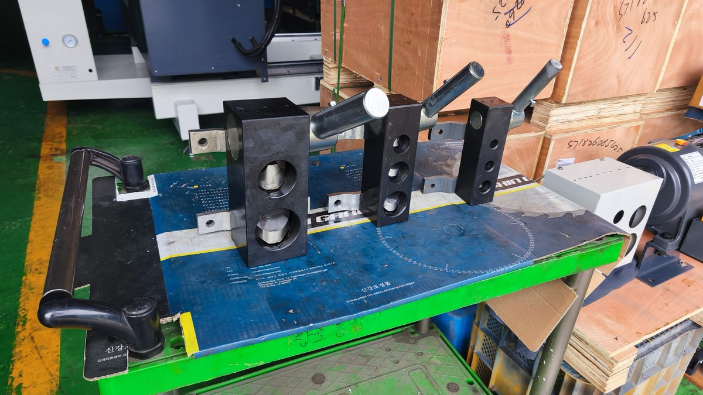
수동식 R 노칭기 3종 — NR1 · NR2 · NR3
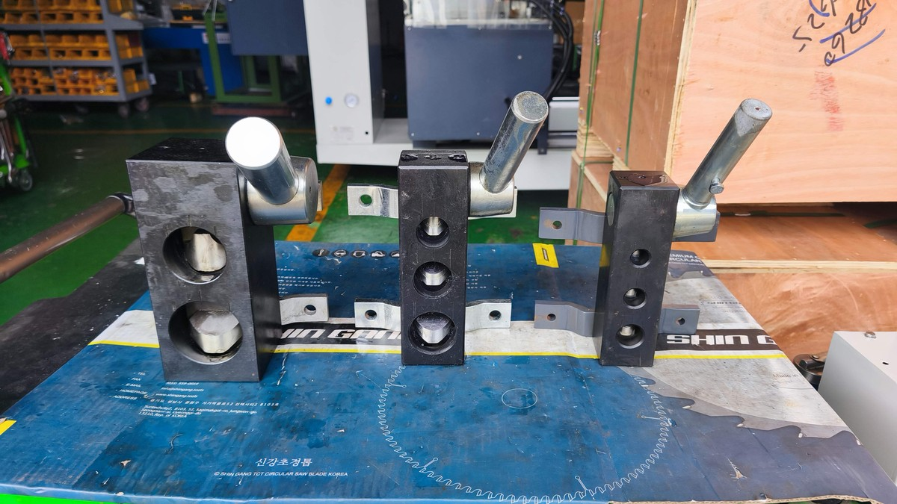
수동식 정면 — 구경대별로 모델이 나뉩니다
Model Line-up
6종 한 표로 비교
전원과 구경을 먼저 보시고, 하루 물량으로 유압·모터·수동을 정하십시오.
| # | 모델 | 구동 · 받는 구경 | 외형 · 중량 | |
|---|---|---|---|---|
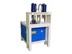 | 1 | TP-M100P2 | 유압 · 2헤드 | 1,100 × 1,800 × 1,500 mm · 400 kg |
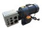 | 2 | WTM-MNR1-220V | 모터식 · 220V | 680 × 350 × 350 mm · 92 kg |
| 3 | WTM-MNR1-380V | 모터식 · 380V 3상 | 680 × 350 × 350 mm · 92 kg | |
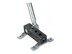 | 4 | WTM-NR1 | 수동 · 1/4" ~ 1/2" | 500 × 180 × 160 mm · 7.5 kg |
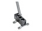 | 5 | WTM-NR2 | 수동 · 3/4" ~ 1-1/4" | 500 × 180 × 160 mm · 9 kg |
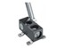 | 6 | WTM-NR3 | 수동 · 1-1/2" ~ 2" | 500 × 180 × 160 mm · 16 kg |
· 외형·중량은 본체 기준입니다. · 가공 범위는 강관 기준이며 소재와 두께에 따라 달라집니다 — 각 기종 제원표를 함께 보십시오.
Order & Shipping
주문 · 출고 안내
납기·사양·부품·전원·시연·사후 관리를 한자리에 모았습니다.
재고 · 납기
주문제작 기종입니다. 사양을 확정해 주시면 그 시점의 납기를 안내해 드립니다.
사양 확인
가공하실 파이프 외경과 두께만 알려 주시면 맞는 기종을 골라 드립니다.
금형 · 소모품
금형과 커터는 소모품입니다. 규격별로 보유하고 있어 부품 대기 없이 처리합니다.
전원 조건
설치 현장의 수전 용량을 미리 확인해 주십시오. 전원 사양은 각 기종 제원표에 있습니다.
사전 시연
김해 전시장에서 진행합니다. 가공하실 소재를 직접 가져오셔도 됩니다.
사후 관리
수리는 입고 처리합니다. 소모·수리 부품을 자체 보유합니다.
Channels
채널 안내
모델 선정 · 견적 문의
가공하실 파이프 지름과 두께, 설치 현장의 전원을 알려 주시면 맞는 기종을 골라 드립니다.
055-327-4112 대표
010-4465-4112 휴대전화
geonics@hanmail.net 이메일